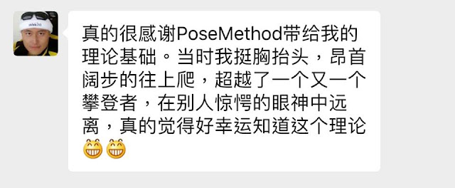
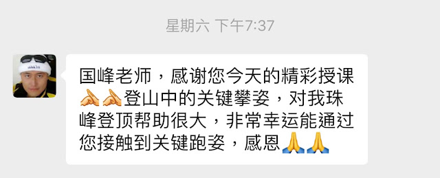
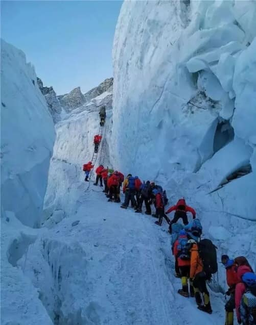
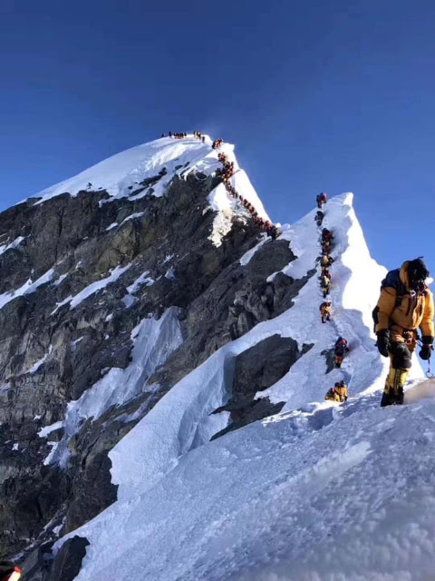
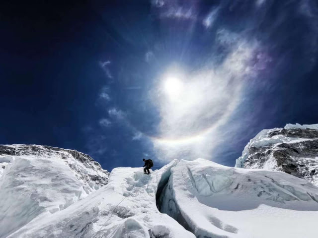

Pose Method：關鍵攀姿
上週的「跑者專項力量訓練課」中有一位學員陳力航（Leo）剛從珠峰下來。課後 Leo 特地跑來跟我說要分享 Pose Method 培訓課程對他的幫助有多大，他說一般人都要逐漸從五千米的山開始逐步練習到六千、七千米才能上去珠峰，但他透過嚴密的準備、訓練和從 Pose Method 學到的「姿勢」概念完成了這次壯舉。下面是他傳來的照片和原話。我問能否分享，Leo 也說想分享給更多人知道：
--
「國峰老師，感謝您今天的精彩授課。登山中的關鍵攀姿，對我珠峰登頂幫助很大，非常幸運能通過您接觸到關鍵跑姿，感恩！！」
「真的很感謝 PoseMethod 帶給我的理論基礎。當時我挺胸抬頭，昂首闊步的往上爬，超越了一個又一個攀登者，在別人驚愕的眼神中遠離，真的覺得好幸運知道這個理論。」


--最近幾年要到各地去培訓教練與講師其實非常累，有時起床後都分不清自己在哪個城市，但每次聽到這種回饋就覺得很值得，這是件非常有意義的事。
上星期的「跑者專項力量課」結束後不久，其中一位學員的回饋也讓我更有動力繼續做好現在與未來要做的事：
「通過每年與老師見面學習，我也每年進步一點點。這次最大收穫就是解決我肩關節靈活度問題。昨天去泳池游泳，以前每泳到 1200 米就想放棄，昨天我突然發現肩關節打開了，我能破水前進，身體也能感受水流的方向，划臂與打腿進入一個愉快地節奏。2000 米游完，意猶未盡，衝刺一個 50 米，仍然活力滿滿，十分喜悅！謝謝」
註： Leo 口中的珠峰就是我們熟悉的「聖母峰」，香港稱珠穆朗瑪峰，中文簡稱珠峰，尼泊爾名為薩加瑪塔峰，英國名埃佛勒斯峰（英語：Mount Everest），為地球第一高峰，屬於喜馬拉雅山脈，位於中國西藏自治區與尼泊爾薩加瑪塔專區邊界上，岩面高為 8,844.43 公尺（29,017.2 英尺）。


